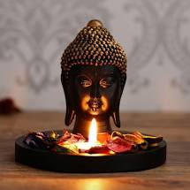

HIMACHAL TOURISM
NorthIndia

INTRODUCTION
trip to Himachal Pradesh is truly pleasurable as it is one of the most famous tourist destinations of India. This land of mountains is a celestial tourist destination where there is no dearth of tourist attractions. Himachal Pradesh is a must-see destination for those who love mountains. The state is proud of its glorious history and rich cultural heritage. There are several monasteries, temples and forts, whose architecture is praise worthy. The views of the breathtaking mountains, passes, valleys, lakes, springs, waterfalls and wildlife are sights to behold.
Location
Himachal Pradesh is a state in the north-west India. Covering an area of 56,019 sq km, Himachal Pradesh is bordered by the Indian states of Jammu and Kashmir on north, Punjab on west and south-west, Haryana and Uttar Pradesh on south, Uttaranchal on south-east and by Tibet on the east.
TOURIST ATTRACTION
Alluring tourists from across the globe, the tourist attractions of Himachal Pradesh are many in number. The most remarkable attractions of the state are its fabulous hill stations such as Shimla, Manali, Kullu, Dalhousie and Dharamsala. There are many Hindu and Buddhist pilgrimages present in Himachal Pradesh. Some of the known Hindu pilgrimages are Bajreshwari temple, Chamunda Devi temple, Lakshmi Narayan temple and Jwalamukhi temple. Main Buddhist pilgrimages in the state are Rewalsar, Guru Ghantal Monastery, Kardang Monastry and Tabo Monastry. Adventure sports is an important tourist attraction of Himachal Pradesh. Shimla and Kufri are the two? destinations famous for skiing. Rivers like Sutlej near Shimla, Beas near Kullu, Ravi near Chamba and the Chandra in Lahaul are the best destinations for river rafting. Travellers can also enjoy adventure sports like para gliding, surfing, kayaking, rowing, canoeing, mountaineering, trekking and rock climbing in Himachal Pradesh.
TOURIST DESTINATIONS
Shimla
kufri
kasoli
manali
kullu
palampur
spiti valley
Solan
